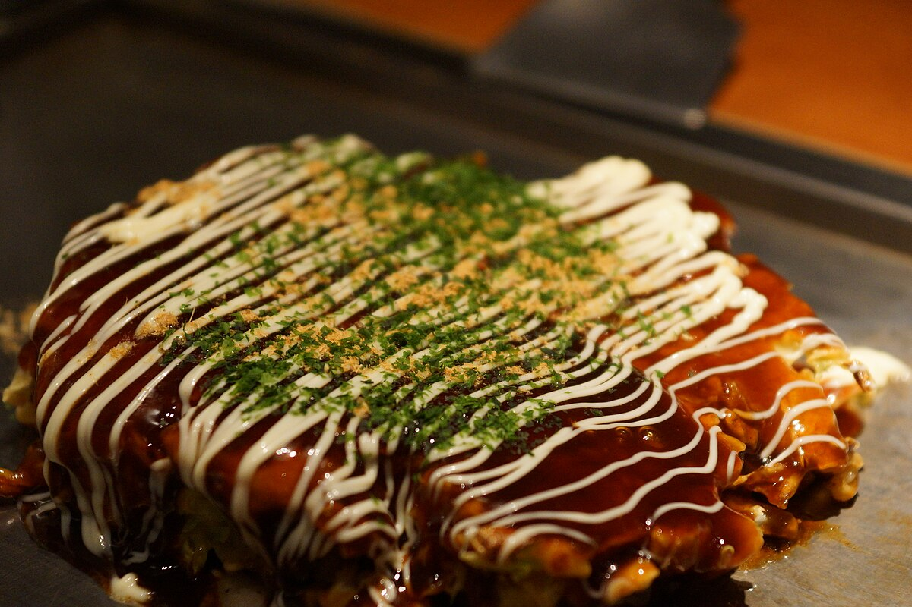

Okonomiyaki

Okonomiyaki: Ein traditioneller japanischer Pfannkuchen
Okonomiyaki ist ein beliebtes japanisches Gericht, das oft als "japanische Pizza" oder "Osaka-Seelenkost" bezeichnet wird. Es handelt sich um einen herzhaften Pfannkuchen, der mit einer Vielzahl von Zutaten zubereitet wird. Der Name "Okonomiyaki" bedeutet wörtlich "gegrillt, wie du es magst", was auf die anpassbare Natur des Gerichts hinweist.
Zutaten
- 200 Milliliter Wasser
- 1 Teelöffel Konbu Dashi Stock Powder
- 160 Gramm Mehl
- 4 Eier
- ¼ Teelöffel Salz
- ¼ Teelöffel Zucker
- 480 Gramm fein gehackter Kohl
- 40 Gramm gehackte grüne Schalotte
- 40 Gramm Tenkasu
- 160 Gramm dünn geschnittenes Schweinefleisch
- Bonito Flocken zum Garnieren
- Eingelegter Ingwer zum Garnieren
- Aonori zum Garnieren
- 1 Esslöffel Olivenöl
- ¼ Tasse Okonomiyaki Sauce
Zubereitung
- Mischen Sie Wasser, Konbu Dashi Stock Powder, Mehl, Eier, Salz und Zucker in einer großen Schüssel.
- Fügen Sie den fein gehackten Kohl, die gehackte grüne Schalotte und Tenkasu hinzu und mischen Sie gut.
- Erhitzen Sie das Olivenöl in einer Pfanne und gießen Sie die Mischung hinein.
- Legen Sie das dünn geschnittene Schweinefleisch auf die Oberseite der Mischung und lassen Sie es kochen.
- Wenden Sie den Pfannkuchen um, wenn er auf einer Seite goldbraun ist, und kochen Sie ihn auf der anderen Seite.
- Wenn der Pfannkuchen auf beiden Seiten goldbraun ist, nehmen Sie ihn aus der Pfanne und garnieren Sie ihn mit Bonito Flocken, eingelegtem Ingwer und Aonori.
- Servieren Sie den Pfannkuchen mit Okonomiyaki Sauce.
Guten Appetit!